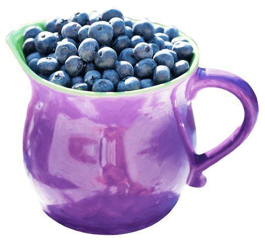

Apples are an awesome source of fibre and vitamin C. They also contain poliphenols, which can have numerous helath benefits. Apples have been

One of our top sellers. Blueberries are so tasty that many people consider them their favorite fruit. In fact, because they are low in
Add zest to your day with our delicious Lemon Luxury smoothie. As a citrus fruit, lemons are high in vitamin C, which is a primary antioxidant